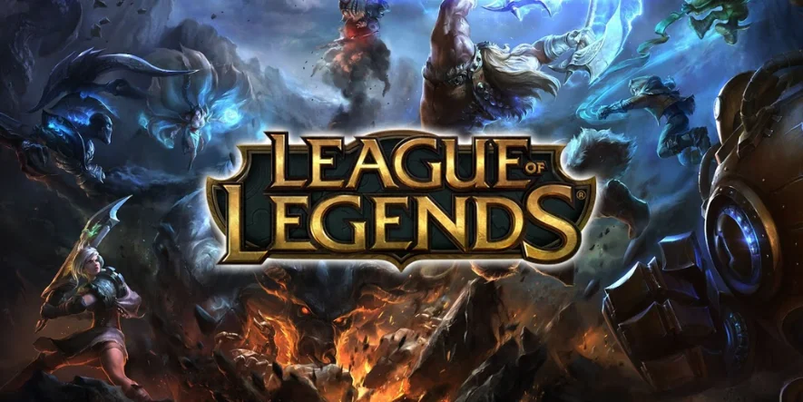

League Of Legends
Um dos games MOBA mais jogados desde seu lançamento
Sobre o Jogo
League of Legends (abreviado como LoL e comumente referido como League) é um jogo eletrônico do gênero multiplayer online battle arena (MOBA) desenvolvido e publicado pela Riot Games.
Foi lançado em outubro de 2009 para Microsoft Windows e em março de 2013 para macOS. Inspirado em Defense of the Ancients (DotA), uma modificação de Warcraft III, os fundadores da Riot buscaram desenvolver um jogo autônomo do mesmo gênero.
Desde o seu lançamento, o título é gratuito para jogar e monetizado por meio de personalização de personagens, a qual é obtenível através de uma moeda virtual comprável com dinheiro real.
Na Game Developers Choice Online Awards de 2010, o jogo recebeu quatro prêmios: "Melhor Tecnologia Online", "Melhor Design de Jogo", "Melhor Jogo Online Estreante" e "Artes Visuais".[102] Na Golden Joystick Awards de 2011, venceu o prêmio de "Melhor Jogo Gratuito para Jogar". A música produzida para o jogo ganhou um Shorty Award,[104] e recebeu uma indicação no Hollywood Music in Media Awards.[105]
Prêmios e Indicações acima
Modos do Jogo
O sucesso inicial do MOBA da Riot Games impulsionou um renascimento nos esports, acompanhado pelo crescimento exponencial das redes sociais e pelo surgimento das primeiras plataformas de stream, que permitiam a transmissão de jogos em todo o mundo em larga escala.
Informação Tirada do Wikepédia

Se interessou ?
para jogar de graça acesse clicando aqui